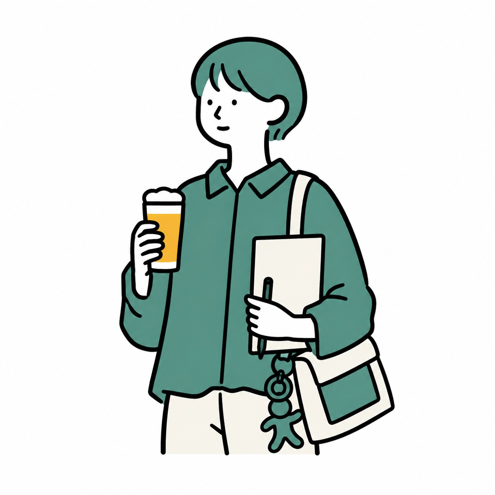
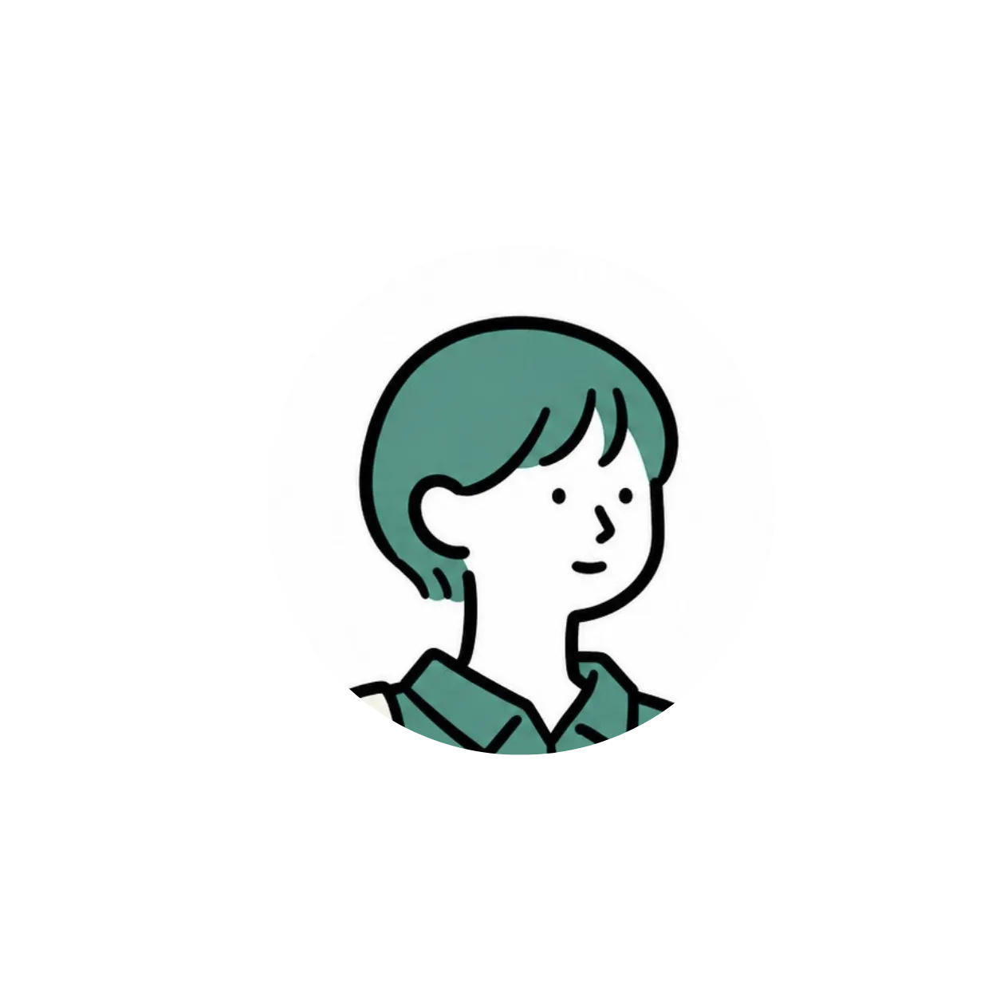

Web Designer×作業療法士
FUMINO MIDORIKAWA

３つの「わ」で、想いを形に。
患者さんの人生に寄り添ってきた視点で、
伝わるデザインを制作します。
-
話
丁寧に、深く聴く。
-
和
心地よい調和を。
-
輪
つながりを広げる。
こんなこと、やってきました。
 HP
HP
 LP
LP
 LOGO
LOGO
 PHOTO
PHOTO
 LP
LP
 LOGO
LOGO
できること。
作業療法士として培った"聴く力・汲み取る力"を、
すべてのサービスに活かしています。
-
ホームページ制作
誰にでも使いやすいUI設計

「老若男女の患者さんと接した経験から、誰にでも見やすい配色・文字サイズを意識しています。」
-
LP制作
行動につながる構成力
「リハビリも"行動を変える"仕事。一歩踏み出せる流れを考えるのが得意です。」
-
ロゴ・名刺・LINE構築
"らしさ"を一貫させるブランド設計
「一人ひとり違う支援計画を立ててきた経験で、"その人らしさ"を見つけます」
-
チラシ・パンフレット制作
伝わる情報設計
「現場で伝わる説明を考えてきたことを活かし、情報の優先順位を整理します」
お気軽にご相談ください。
作業療法士として培った"聴く力"で、
あなたの想いをデザインに変えます。
まずはお気軽にお問い合わせください。